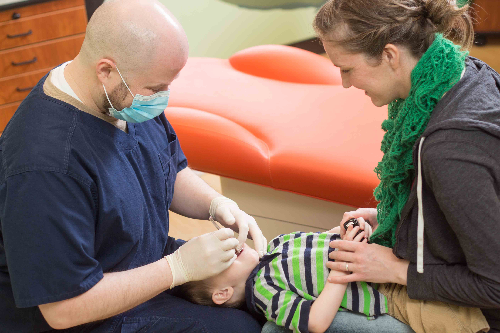
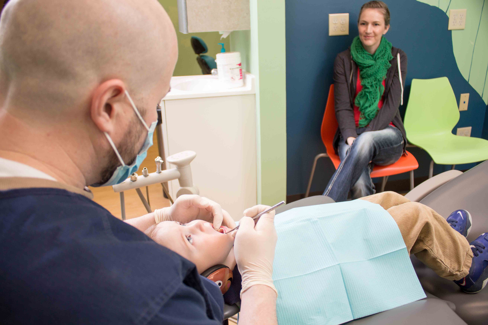

Pediatric Dentistry
The Preventive Program
Our dental hygiene program focuses on preventing decay, preserving teeth, and keeping your child’s mouth as healthy as possible. Our Hygienists work with parents to make kids feel comfortable. Parents are encouraged to be with their child during all visits in our office. Working together, the parents, hygienists, and dentists formulate a customized plan that will care for each child. We recommend that each child be seen at least twice a year for a preventive care.
Infant Care

Early oral exams are recommended by the American Academy of Pediatric Dentistry to be no later than 12 months of age. The primary focus of this first visit is your child’s oral health and how to prevent caries. Utilizing a knee to knee exam the dentist will work with the parent to complete a dental exam. During this first visit there will be a discussion about dental caries and how to avoid them. We look forward to meeting your child.
Fluoride treatments
Fluoride aids in remineralization and helps prevent demineralization from acid and harmful bacteria. The American Academy of Pediatric Dentistry recommends that each child “at risk for dental” cavities receive fluoride treatments as part of their prevention program. A fluoride varnish is brushed on the teeth in a manner similar to applying fingernail polish. This is typically the last step at the end of the cleaning appointment and is followed by a Xylitol sweetened lollipop! These simple and painless treatments make your child’s tooth enamel much more resistant to caries.
Please do not hesitate to inform the provider if you wish to decline fluoride for your children. We support your parental decisions.
Dental Fillings
We offer several different choices of white filling material. Recommendations of what material to utilize while restoring your child’s teeth depends on their individual needs and desires; for example, a recommendation for a back molar could be very different from what might be recommended for a front tooth. A back molar needs to be strong and last until age 12, where a front tooth mostly just needs to look nice and last until age 6. Recommendations will be discussed individually for your child.
Space Maintainers
When a primary molar tooth is lost prematurely a space maintainer may be recommend to “save” the space created by the missing tooth. One of the functions of your child’s baby teeth is to save space for the arrival of their permanent teeth, which should erupt into the position once held by the primary tooth. If a primary tooth requires early extraction due to an abscess or severe decay, a space maintainer is designed to save the space. This space needs to be preserved to prevent other teeth from drifting, which can cause crowding and other orthodontic problems. Space maintainers are unnecessary for front teeth.
Interceptive Orthodontics

Historically, most patients did not start orthodontic treatment until all of their permanent teeth had erupted and then had a “crooked smile” diagnosed around the age of 12. Waiting this long often necessitated the extraction of several permanent teeth and contributed to a longer and more expensive plan to straighten the teeth.
Interceptive orthodontics is a technique and philosophy which was developed to address certain orthodontic problems in childhood. This early intervention and phased treatment can result in fewer extracted teeth. In addition, when it comes to treatment children are often more compliant than teenagers.
Some of the techniques used in this interceptive orthodontic phase include arch expansion, which allows more room for permanent teeth and orthopedic growth appliances which enhance jaw growth and make later orthodontic treatment much simpler.
These early interventions will be discussed with you if one of our dentists can see a benefit to your child.